BAA.flow membantu tim lapangan mengisi Berita Acara (BAA) per lokasi — data, wilayah, inventory, foto, dan scan PDF — lalu mengekspornya ke template Excel/PDF resmi. Pilih panduan sesuai peran Anda.
SETUPProject sedang disiapkan admin. Belum bisa diisi.
ACTIVENormal — tim bisa mengisi BAA.
FROZENDibekukan sementara — hanya bisa dilihat.
DRAFTLokasi belum lengkap.
DONELokasi 100% lengkap & sudah di-Finish.
lightbulb
Kotak bernomor 1 pada gambar menunjuk tombol atau bagian yang dijelaskan di bawah gambar.
shield_person
Panduan 1
Admin
Admin menyiapkan project, membuat akun tim, memantau progres, dan menjaga data tetap rapi.
Alur kerja admin
1add_circleBuat projectarrow_forward2tuneSiapkan (Setup)arrow_forward3rocket_launchActivatearrow_forward4monitoringPantau & bantu timarrow_forward5ac_unitFreeze bila perlu
1.1
Pertama kali membuka aplikasi
Saat aplikasi baru dipasang, admin login dengan akun bawaan lalu langsung diminta mengganti password.
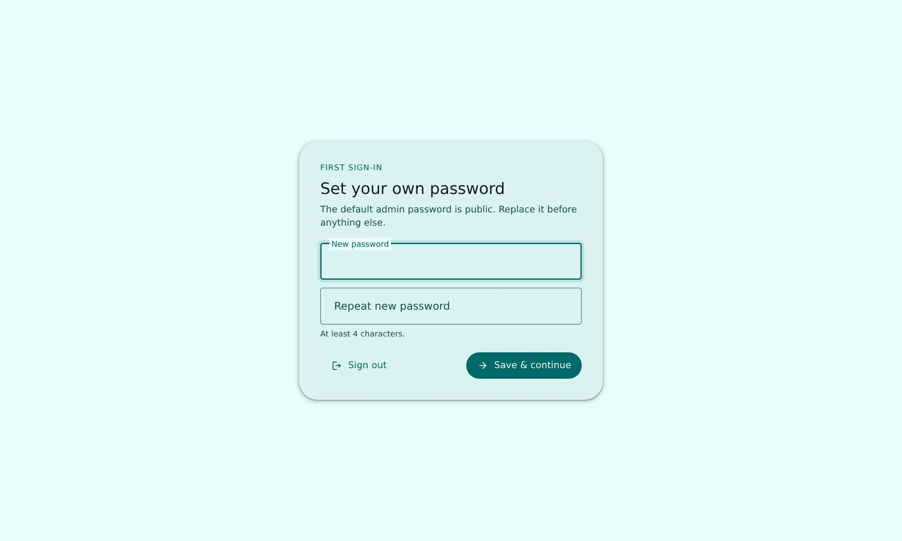
123
1Ketik password baru (minimal 4 karakter).
2Ketik ulang password yang sama.
3Klik Save & continue.
warning
Password bawaan (admin / admin) diketahui umum. Aplikasi tidak bisa dipakai sebelum diganti.
1.2
Buat project pertama
Satu project = satu pekerjaan BAA dengan template, data, dan tim sendiri.
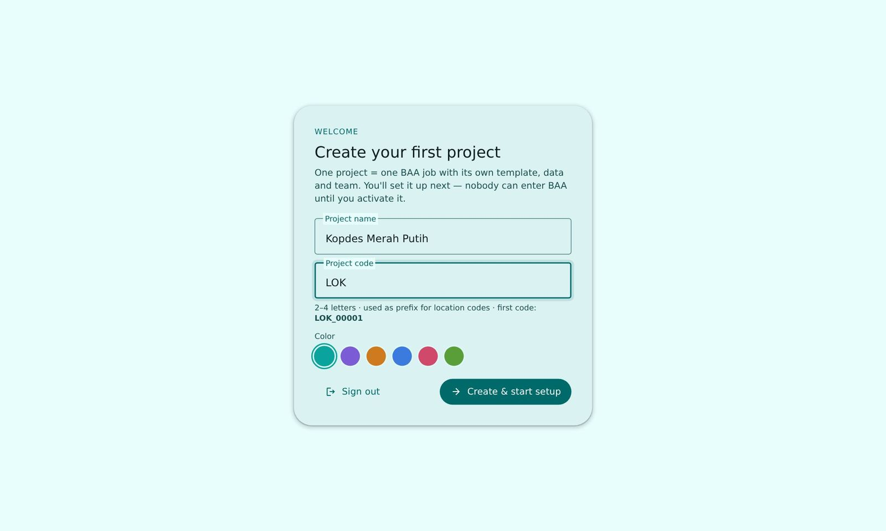
1234
1Nama project, mis. Kopdes Merah Putih.
2Project code (2–4 huruf) — dipakai sebagai awalan kode lokasi, mis. LOK_00001.
3Warna project — membantu membedakan project di layar.
4Klik Create & start setup.
lightbulb
Project pertama langsung berisi pengaturan bawaan BAA (4 field, 11 kategori foto, 3 inventory) dan berstatus Setup. Belum ada yang bisa mengisi BAA sampai project diaktifkan.
1.3
Kenali layar utama
Semua menu ada di sidebar kiri. Bagian bawah sidebar selalu terlihat.
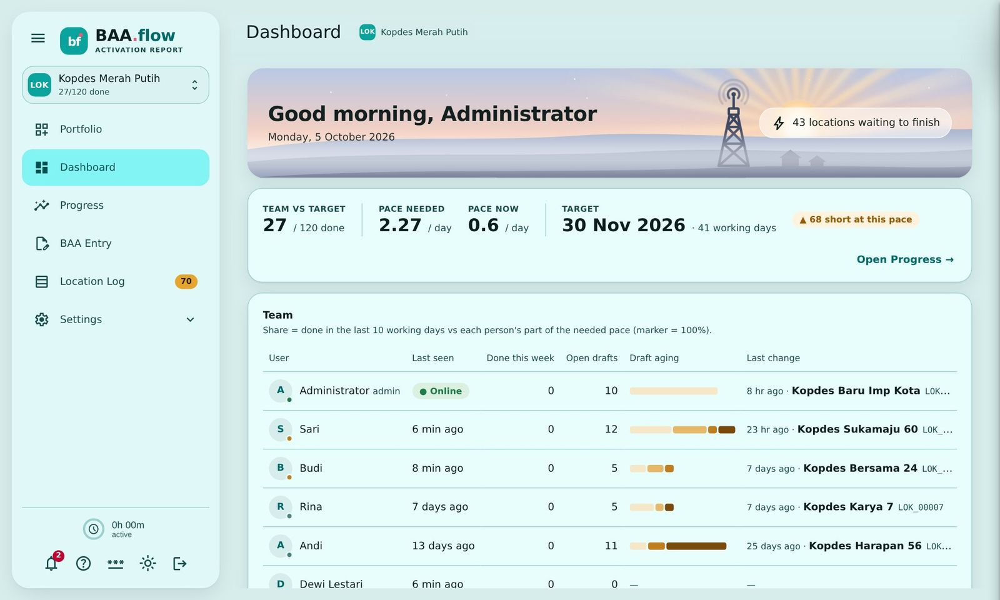
12345678
1Pemilih project — pindah project (atau tekan Ctrl+K).
2Portfolio — ringkasan semua project.
3BAA Entry — tempat mengisi BAA per lokasi.
4Location Log — daftar semua lokasi, impor, dan export.
5Settings — pengaturan project ini dan workspace.
6Lonceng — permintaan edit dari operator.
7Timer kerja hari ini.
8Ganti tema terang / gelap.
1.4
Siapkan project (mode Setup)
Selama Setup, sidebar berubah menjadi langkah-langkah. Kerjakan dari atas ke bawah, lalu aktifkan.
2Location data — sudah terisi pengaturan bawaan; status Check sampai Anda mengeceknya.
3Template BAA — file Excel BAA + pemetaan sel.
4Team — siapa saja yang boleh masuk.
5Target — boleh diisi nanti.
6Activate project aktif setelah semua langkah wajib selesai.
lightbulb
Isi Location data dulu sebelum Template — pemetaan template memerlukan field dan kategori foto.
1.5
Location data · Field lokasi
Tentukan data apa saja yang wajib diisi teknisi untuk setiap lokasi.
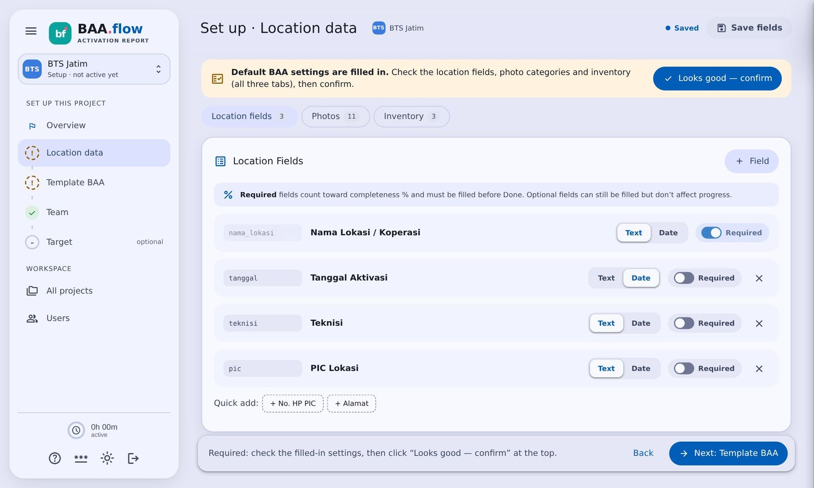
123456
1Isian bawaan sudah ada. Cek ketiga tab dulu.
2Tiga tab: Location fields, Photos, Inventory. Angka = jumlah isian.
3Setiap baris = satu field. Nama Lokasi adalah field sistem (terkunci).
4Quick add — tambah field umum dengan sekali klik.
5+ Field — buat field sendiri.
6Sudah sesuai? Klik Looks good — confirm. Langkah ini baru ✓ setelah dikonfirmasi.
lightbulb
Nyalakan Required untuk field yang wajib diisi. Hanya field Required yang dihitung dalam persentase kelengkapan dan wajib terisi sebelum Done; field lain boleh diisi tapi tidak memengaruhi progres.
lightbulb
Pilih Date untuk tanggal. Jangan lupa Save fields bila mengubah sesuatu.
1.6
Location data · Kategori foto
Setiap kategori = satu kotak foto di BAA Entry dan satu gambar di BAA.
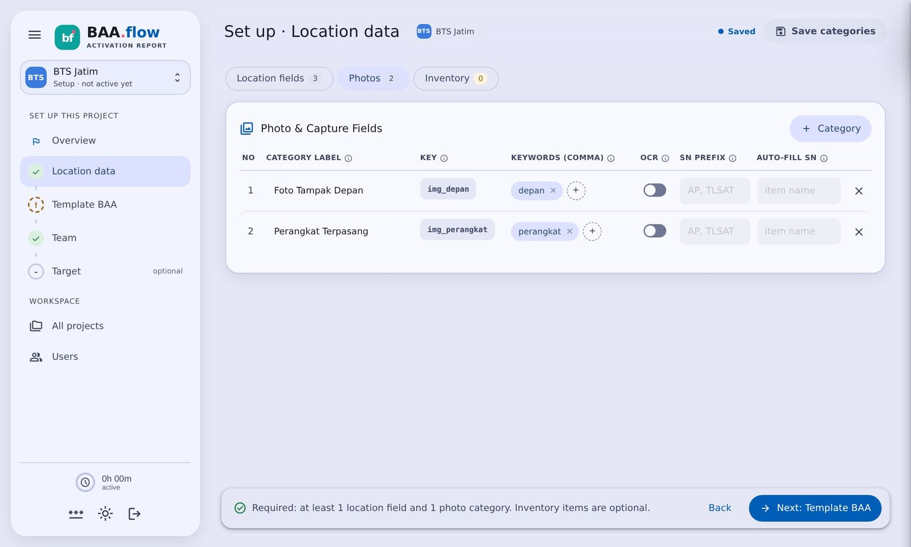
123
1Tab Photos.
2Daftar kategori: nama, kata kunci nama file, OCR nomor seri.
3+ Category untuk menambah.
lightbulb
Kata kunci: foto yang nama filenya mengandung kata ini otomatis masuk kategori tersebut saat upload banyak foto.
lightbulb
Nyalakan OCR untuk foto label SN agar nomor seri terbaca otomatis.
lightbulb
Baris Scan PDF di atas daftar menunjukkan apakah scan PDF wajib di project ini. Ubah lewat Project & status › Features.
1.7
Location data · Inventory
Barang yang dipasang di lokasi (mis. Kit Starlink, Router, Access Point).
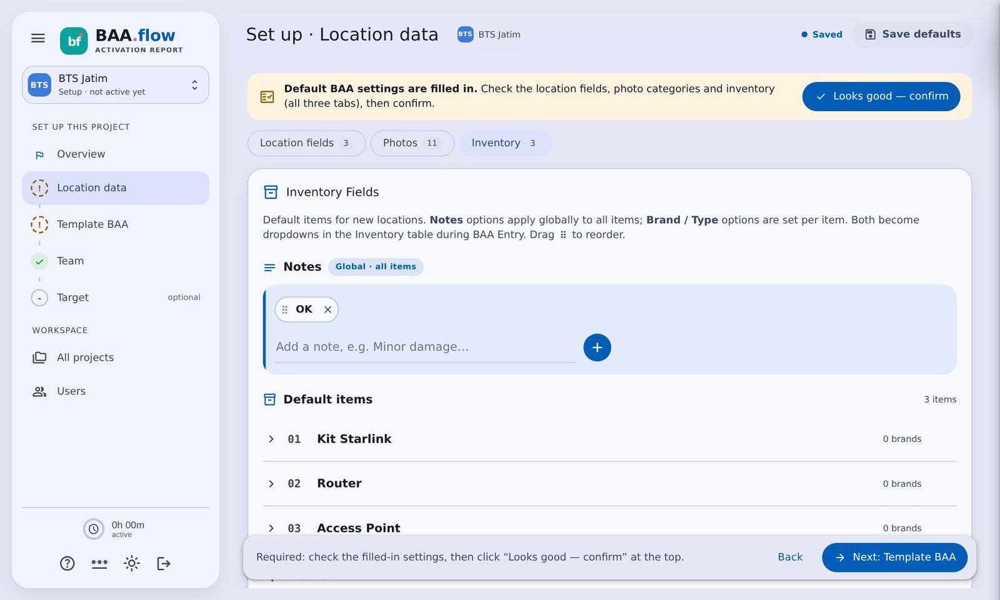
123
1Tab Inventory.
2Default items — baris inventory yang otomatis ada di setiap lokasi baru (klik untuk mengatur pilihan Brand / Type).
3Pilihan Notes (mis. "OK") yang muncul sebagai dropdown di BAA Entry.
1.8
Project berikutnya · pilih isi awal
Untuk project kedua dan seterusnya: Settings › All projects › New project. Pilih dari mana isi awalnya.
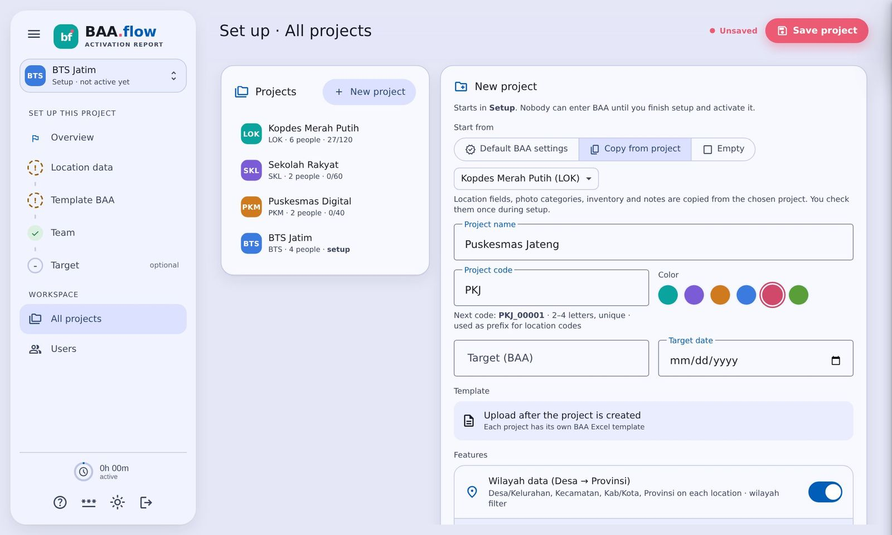
1234
1Start from: Default BAA settings (pengaturan bawaan), Copy from project (salin dari project lain), atau Empty (kosong).
2Pilih project yang mau disalin.
3Project code project baru.
4Simpan — project baru masuk mode Setup.
lightbulb
Bawaan atau salinan tetap harus dicek sekali di langkah Location data (Looks good — confirm).
1.9
Team · Buat akun & beri akses
Buat akun operator langsung dari sini. Akun baru otomatis mendapat akses ke project ini.
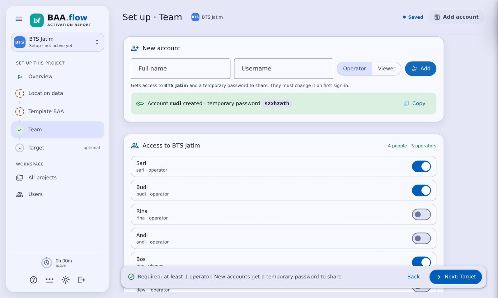
1234
1Isi nama lengkap, username, dan pilih peran (Operator atau Viewer).
2Klik Add.
3Password sementara muncul di sini — klik Copy lalu kirim ke orangnya.
4Nyalakan / matikan akses akun lain ke project ini.
lightbulb
Operator wajib mengganti password sementara saat login pertama.
1.10
Target (opsional)
Jumlah BAA yang harus selesai dan tenggat waktunya. Dipakai untuk menghitung kecepatan di Dashboard dan Progress.
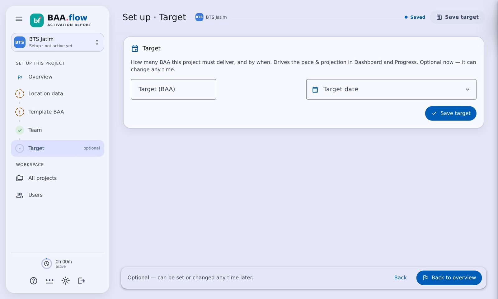
123
1Jumlah BAA.
2Tanggal target.
3Save target.
1.11
Template BAA
Unggah file Excel BAA, lalu petakan kolom dan sel agar data otomatis masuk saat export.
5Langkah 3: Detail Sheet — halaman BAA per lokasi (data, inventory, foto).
6Save mapping setelah selesai.
1.12
Template BAA · Memetakan kolom
Untuk setiap judul kolom di Excel, pilih data aplikasi yang akan mengisinya.
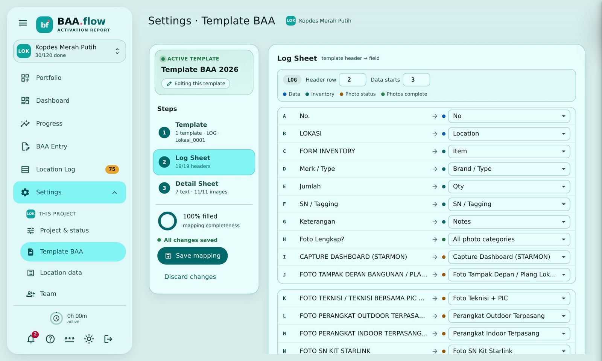
1234
1Langkah yang sedang dibuka.
2Pilih isi kolom dari daftar (Data, Wilayah, Inventory, Foto).
3Persentase pemetaan yang sudah lengkap.
4Save mapping.
lightbulb
Lupa menyimpan? Saat pindah menu, aplikasi akan bertanya Save / Discard.
1.13
Dashboard admin
Ringkasan harian: capaian tim, kecepatan, dan siapa yang perlu dibantu.
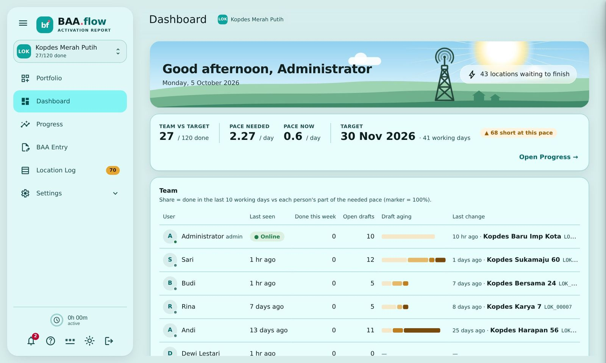
123
1Info cepat (mis. jumlah lokasi yang menunggu diselesaikan).
2Capaian vs target, kecepatan yang dibutuhkan, dan tanggal target.
3Tabel tim: online/tidak, draf terbuka, umur draf.
1.14
Progress & peta wilayah
Lihat sebaran lokasi per wilayah dan prakiraan capaian target.
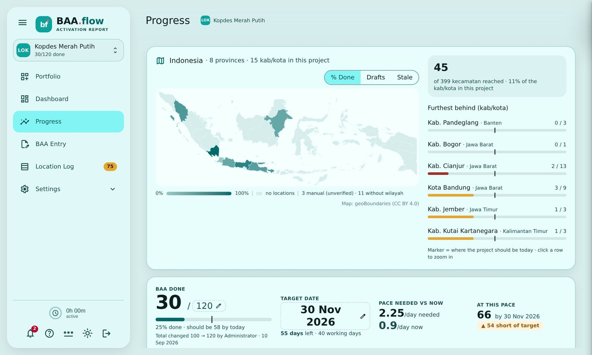
1
1Peta per kabupaten/kota — klik baris untuk memperbesar.
lightbulb
Klik ikon pensil di angka target / tanggal untuk mengubahnya langsung.
1.15
Portfolio (banyak project)
Satu kartu per project. Klik kartu untuk membuka project itu.
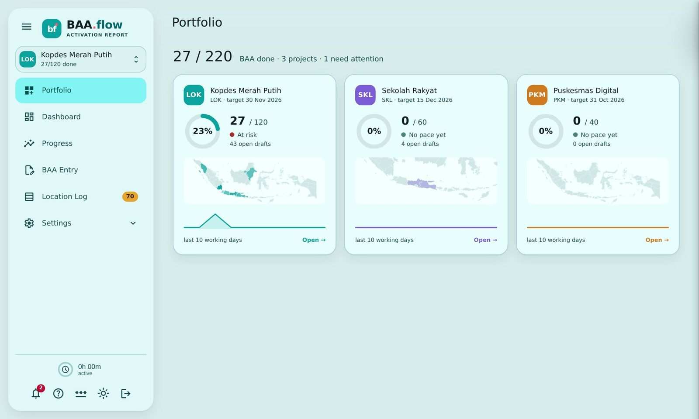
123
1Total semua project.
2Kartu project: persentase, status kecepatan, draf terbuka.
3Peta mini sebaran lokasi.
1.16
Location Log
Daftar semua lokasi. Cari, saring, export, impor, dan pulihkan lokasi yang terhapus.
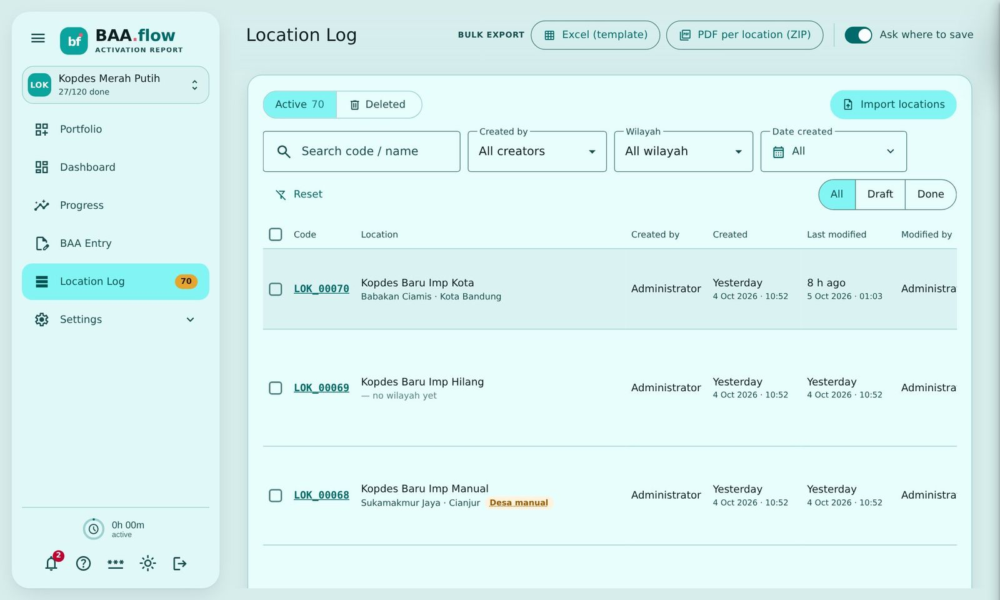
1234567
1Active / Deleted — lihat lokasi yang terhapus dan pulihkan.
2Import locations dari Excel.
3Cari kode atau nama lokasi.
4Saring berdasarkan pembuat.
5Saring berdasarkan wilayah.
6Export banyak lokasi sekaligus (Excel / PDF per lokasi).
7Centang beberapa lokasi untuk aksi massal (mis. isi wilayah).
lightbulb
Klik baris lokasi untuk membuka panel detail di kanan.
1.17
Panel detail lokasi
Cek kelengkapan satu lokasi tanpa membuka BAA Entry.
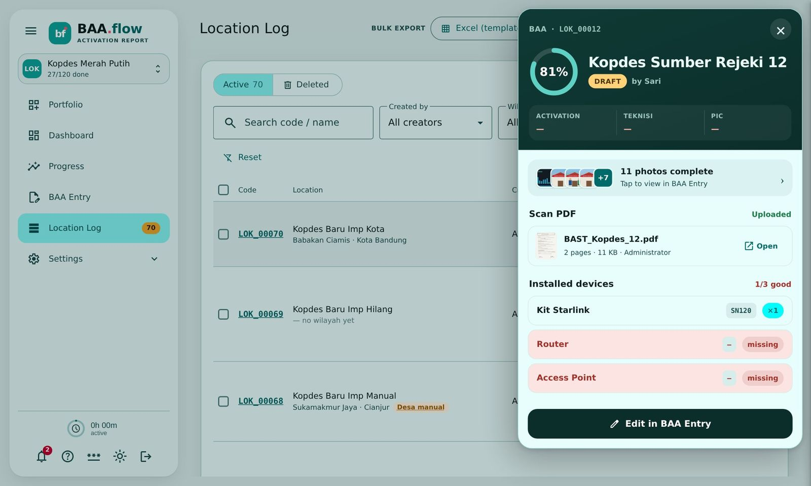
12345
1Persentase kelengkapan lokasi.
2Foto yang sudah ada (klik untuk melihat di BAA Entry).
3Status Scan PDF — klik Open untuk membuka.
4Perangkat terpasang dan nomor serinya.
5Edit in BAA Entry.
1.18
Import lokasi dari Excel
Masukkan banyak lokasi sekaligus. Kode lokasi dibuat otomatis.
1downloadDownload templatearrow_forward2edit_noteIsi di Excelarrow_forward3upload_fileUploadarrow_forward4previewCek previewarrow_forward5done_allImport
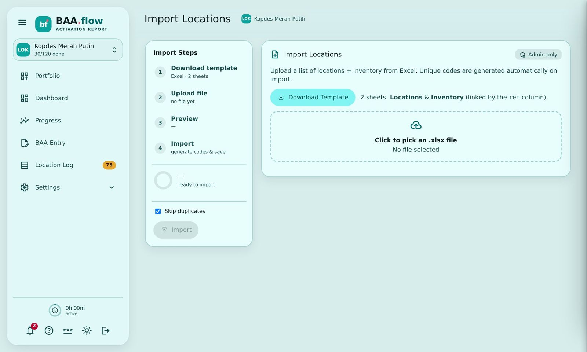
1234
1Ikuti 4 langkah di kiri.
2Download Template — format Excel yang benar.
3Klik untuk memilih file yang sudah diisi.
4Klik Import setelah preview benar.
1.19
Permintaan edit (lonceng)
Operator hanya bisa mengubah lokasi miliknya. Jika perlu mengubah lokasi orang lain, ia mengirim permintaan.
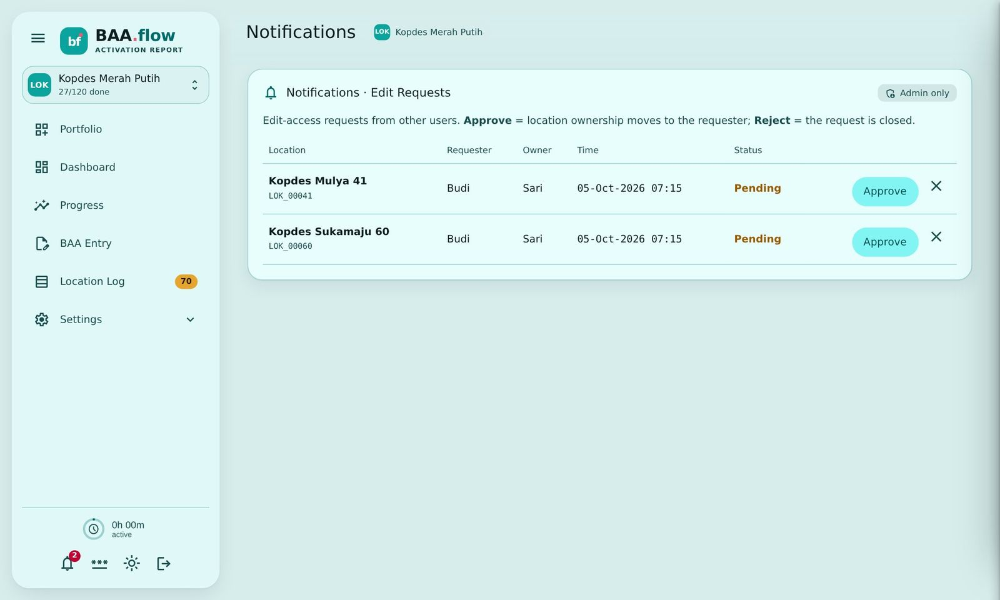
123
1Lokasi, peminta, dan pemilik saat ini.
2Approve — lokasi pindah ke peminta.
3Angka merah di lonceng = jumlah permintaan baru.
lightbulb
Tombol ✕ untuk menolak permintaan.
1.20
Lokasi terhapus
Lokasi yang dihapus tidak langsung hilang. Data dan foto tetap tersimpan.
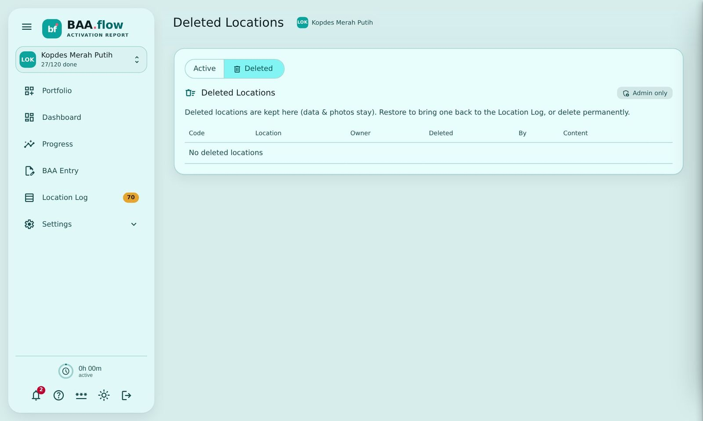
12
1Tab Deleted di Location Log.
2Pulihkan atau hapus permanen dari sini.
1.21
Project & status
Ubah nama, warna, target, fitur Wilayah, dan akses. Di sini juga Freeze / Unfreeze.
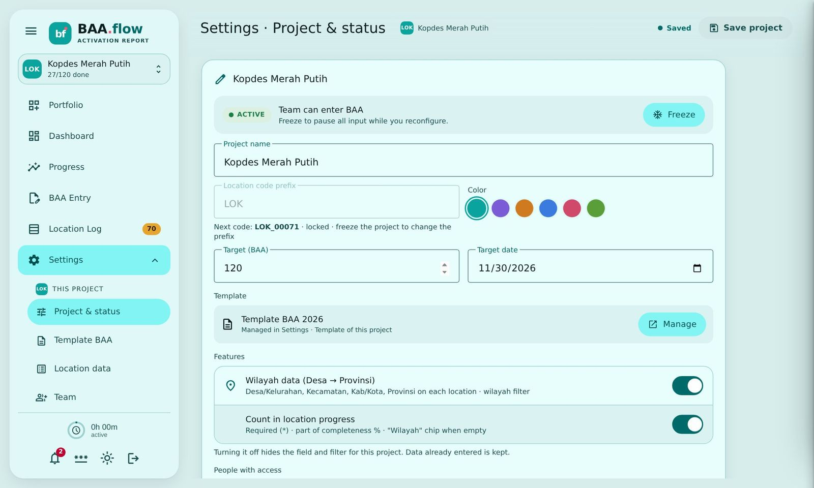
12345
1Status project: SETUP, ACTIVE, atau FROZEN.
2Freeze — hentikan semua input sementara.
3Project code terkunci setelah kode lokasi pertama terbit.
4Target BAA dan tanggal.
5Features: Wilayah data (dan apakah dihitung dalam kelengkapan) serta Scan PDF required.
lightbulb
Ada perubahan yang belum disimpan? Indikator Unsaved muncul di kanan atas dan aplikasi mengingatkan sebelum pindah menu.
1.22
Freeze project
Bekukan project saat admin perlu merapikan sesuatu (mis. revisi template). Operator hanya bisa melihat.
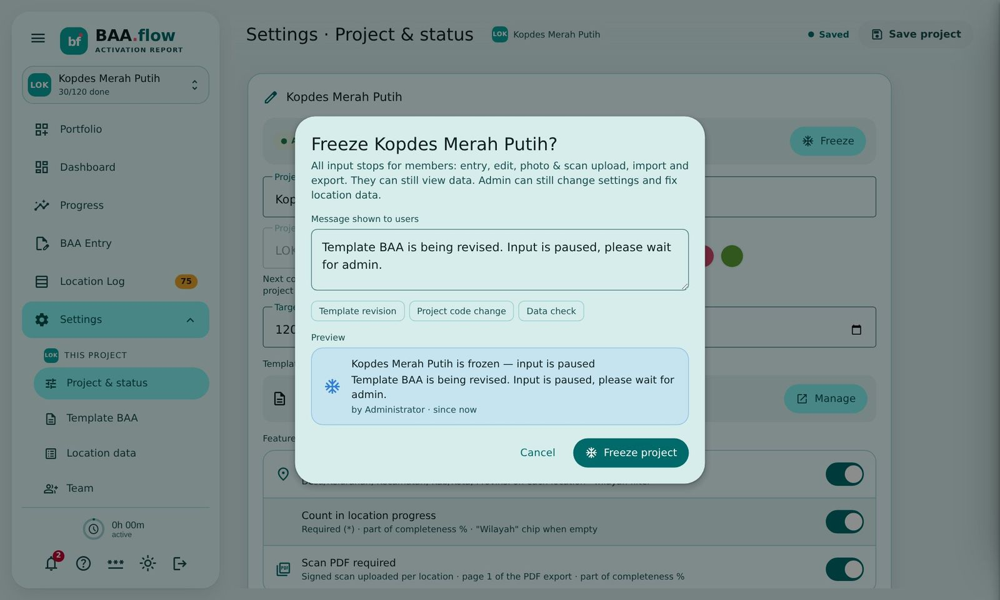
1234
1Tulis pesan untuk tim.
2Atau pilih pesan cepat.
3Pratinjau banner yang dilihat tim.
4Freeze project.
warning
Saat Frozen, operator tidak bisa mengisi, mengubah, upload, impor, maupun export.
1.23
Saat project Frozen
Admin tetap bisa mengubah pengaturan dan data. Banner biru muncul di semua halaman.
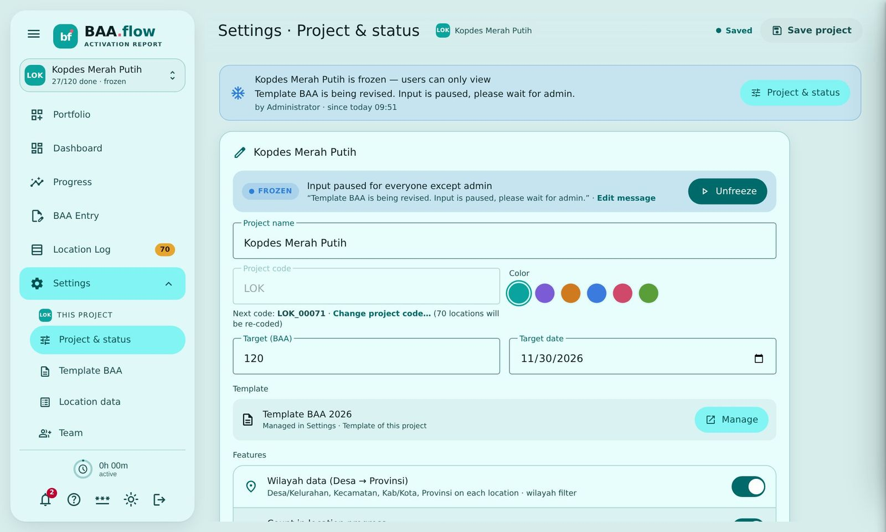
12345
1Banner pesan untuk semua user.
2Status FROZEN.
3Edit message — ubah pesan.
4Unfreeze — buka kembali input.
5Change project code… — ganti project code (hanya saat Frozen).
1.24
Ganti project code
Mengubah semua kode, mis. LOK_00001 → KMP_00001. Nomor tetap sama; folder foto & scan ikut pindah.
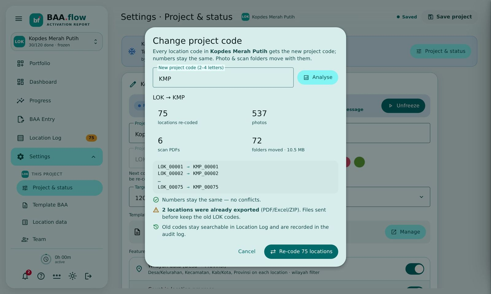
1234
1Ketik project code baru, klik Analyse.
2Ringkasan yang akan berubah.
3Contoh kode lama → baru.
4Re-code untuk menerapkan.
lightbulb
Kode lama tetap bisa dicari di Location Log.
warning
File PDF/Excel yang sudah pernah dikirim tetap memakai kode lama.
Mengisi password baru untuk user lama = reset password. User wajib menggantinya saat login berikutnya.
1.26
Backup & Restore
Simpan cadangan seluruh data secara rutin.
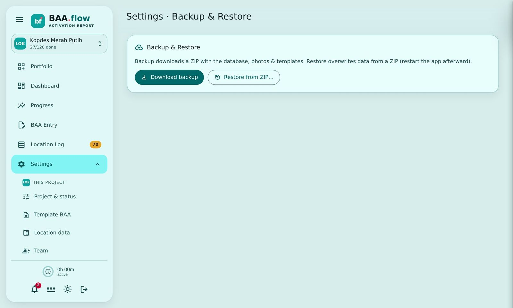
12
1Download backup — satu file berisi semua data & foto.
2Pulihkan dari file backup.
lightbulb
Foto baru otomatis dikecilkan saat upload (maks. 2000 px) agar folder data tidak cepat penuh — tanggal & GPS kamera tetap tersimpan, hasil export BAA tetap sama.
lightbulb
Compress existing photos — kecilkan foto lama sekali jalan. Download backup dulu bila ingin menyimpan file aslinya.
warning
Restore mengganti seluruh data saat ini dengan isi file backup.
bolt
Ringkasan Admin — 1 halaman
Saya ingin… → caranya
Mulai project baruSettings › All projects › New project → pilih Start from → langkah Setup (cek & confirm Location data) → Activate project
Tambah operatorSettings › This project › Team → isi nama & username → Add → kirim password sementara
Ubah template / mappingSettings › Template BAA → Save mapping